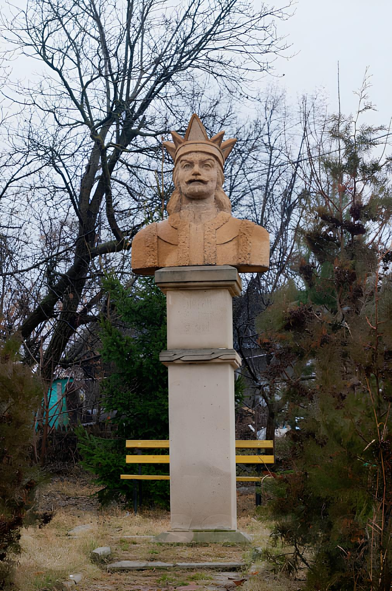

Turism
Această pagină va prezenta principalele atracții turistice ale satului Tătărăuca Veche, frumusețea naturală a zonei și posibilitățile de relaxare și explorare pentru vizitatori.
Această pagină va prezenta principalele atracții turistice ale satului Tătărăuca Veche, frumusețea naturală a zonei și posibilitățile de relaxare și explorare pentru vizitatori.
Situat într-un colț pitoresc al Moldovei, satul Tătărăuca Veche este locul ideal pentru cei care caută liniște, natură și tradiții autentice. De la peisaje fermecătoare pe malul Nistrului până la monumente istorice și ospitalitatea localnicilor, acest loc îți oferă o experiență unică de descoperire și relaxare.
Tătărăuca Veche este situată într-o zonă deosebit de frumoasă, pe malul râului Nistru. Turiștii pot admira peisajele naturale, se pot plimba prin pădurile din apropiere sau se pot bucura de liniștea oferită de această regiune.
Dealul Drăguței – Un loc pitoresc, plin de legende locale, de unde se poate admira o panoramă superbă asupra satului și a râului Nistru.
La Izvorul de la Râpă – Un izvor natural situat într-o zonă adâncită, folosit de localnici de generații pentru apa sa curată și rece.
Orașul vechi Maetonium, numit astăzi La Șanțuri – Ruinele unei așezări antice, cunoscută în trecut ca Maetonium, unde se mai pot observa urmele vechilor fortificații.
Case tradiționale – Arhitectura veche a satului, cu case construite din materiale naturale, păstrează farmecul autentic al zonei și reflectă stilul de viață tradițional.
Fântânile vechi – Construcții vechi din piatră sau lemn, unele încă funcționale, care au fost folosite de comunitate timp de secole pentru aprovizionarea cu apă.
Satul Tătărăuca Veche păstrează mărturii ale istoriei sale bogate, de la biserici vechi la case tradiționale și locuri cu semnificație istorică.
Biserica Sfinții Arhangheli Mihail și Gavriil – Un lăcaș de cult cu o arhitectură deosebită, având o importanță spirituală și istorică pentru comunitate.

.jpg)
Monumentul ridicat în cinstea profesorilor – Un omagiu adus dascălilor care au contribuit la educația și dezvoltarea generațiilor din sat.
Monumentul lui Ștefan cel Mare – O statuie dedicată marelui domnitor, simbol al curajului și al identității naționale.

Monumentul eroilor – Un memorial închinat localnicilor care au luptat și și-au pierdut viața în războaie, amintind de sacrificiul lor.
Casa lui Eva Gudumac – Locuința unei personalități marcante a satului, păstrând elemente arhitecturale și istorice valoroase.
Casa lui Petre Popa – Un loc important pentru istoria locală, asociat cu viața și activitatea unui membru de seamă al comunității.
Tătărăuca Veche își păstrează cu mândrie tradițiile, iar vizitatorii au ocazia să descopere meșteșuguri vechi, rețete tradiționale și obiceiuri transmise din generație în generație.
Paștile - o sărbătoare importantă, marcată printr-un ritual religios și tradiții culinare specifice.
Crăciunul - o perioadă de bucurie și colinde, cu obiceiuri specifice de sărbătorire.
Ziua satului - un eveniment anual care celebrează comunitatea și tradițiile locale.
Vizitatorii satului pot participa la diverse activități recreative, în funcție de anotimp și preferințe.
Drumeții pe dealuri și în păduri
Primblări pe malul Nistrului
Excursii ghidate la obiective istorice
Participarea la sărbătorile locale
Deși satul nu are hoteluri mari, turiștii pot fi găzduiți în casele localnicilor, unde vor fi primiți cu ospitalitate și vor avea ocazia să guste mâncăruri tradiționale.
O experiență autentică, unde vizitatorii pot descoperi ospitalitatea tradițională. Casele sunt amenajate în stil rustic, iar gazdele oferă mese gătite în casă și povești despre sat.


Bucătăria locală este o combinație de arome autentice și ingrediente proaspete, cultivate în gospodăriile oamenilor.
Plăcinte moldovenești – Aluat fraged umplut cu brânză, cartofi, varză sau dovleac, coapte la cuptor sau prăjite pe plită.
Mămăligă cu brânză și smântână – O rețetă simplă, dar delicioasă, servită adesea cu friptură sau pește prăjit.
Sarmale – Foi de varză umplute cu carne și orez, gătite lent într-un sos aromat.
Tocănițe de casă – Gătite cu carne de pui, porc sau vită, asezonate cu mirodenii locale și servite cu mămăligă.
Zeamă de pui cu tăiței de casă – O supă clară, aromată, perfectă pentru zilele răcoroase.
Colaci de casă – Pufoși și aromați, pregătiți la sărbători și ocazii speciale.
Cozonac cu nucă și mac – O prăjitură dulce, perfectă pentru mesele festive.
Compoturi și dulcețuri – Preparare din fructe locale, păstrate pentru iarnă.
Vin de casă și rachiu – Băuturi tradiționale, produse artizanal din strugurii cultivați în zonă.